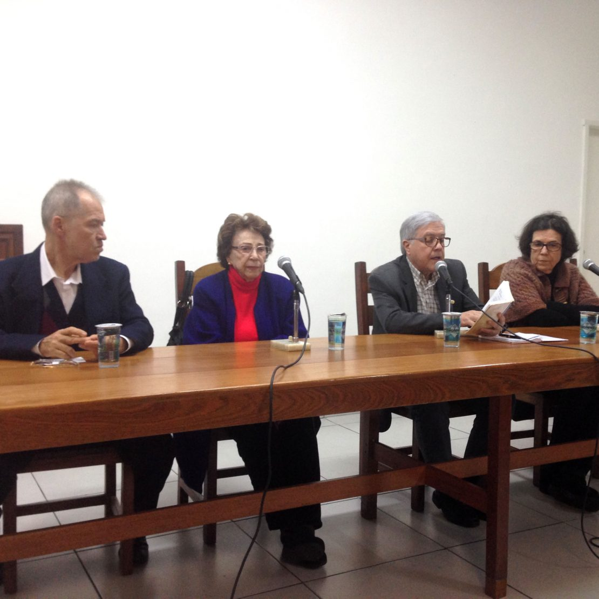

Agenda de Palestras
Participe de nossas palestras e passes
Crença, fé e superstição
Palestrante: Saulo Lara
Aquele que estiver sem pecado, que atire a primeira pedra
Palestrante: Sergio Santos Silva
Livre
Mesa Redonda, realizada no Centro Espírita União

Morte – O valor do Passe
Palestrante: Carlos Thurler
Oração e Renovação – Vinha de Luz, n°21
Palestrante: Dr Davi Monducci
Quem Somos
Fundado em 1967 por Francisco e Nena Galves, o Centro Espírita União nasceu da dedicação de pessoas comprometidas com a divulgação da Doutrina Espírita codificada por Allan Kardec.
Nossa casa possui uma conexão especial com a história do Espiritismo no Brasil, tendo recebido a orientação do querido Chico Xavier, cujo acervo de cartas e fotografias preservamos com carinho no Espaço Acervo Chico Xavier.
Ao longo de mais de cinco décadas, mantemos nosso compromisso com o acolhimento, o estudo e a prática da caridade, sempre abertos a todos que buscam conhecimento espiritual.
Nossas Atividades
Oferecemos diversas atividades para todas as idades, sempre pautadas no estudo, na caridade e no acolhimento fraterno.
Palestras Públicas
Palestras sobre o Evangelho e tríplice aspecto do espiritismo, seguidas pelo Passe (transmissão de energias).
Quarta: 14h00 | Quinta: 19h45
Atendimento Fraterno
Acolhimento individual para orientação espiritual e encaminhamento para as atividades ou tratamento mais indicado.
Quarta: a partir das 14h00 (Gisele Araujo)
Evangelização Infantil
Educação com base em Jesus e Kardec, cultivando nas crianças e jovens o amor pelo Evangelho e pelo próximo.
Tratamento Espiritual
Passes administrados por médiuns preparados, visando o equilíbrio e reabilitação física, mental e espiritual.
Quinta-feira: 19h45
Desobsessão
Trabalho mediúnico especializado no auxílio a espíritos em sofrimento e processos obsessivos, conforme as obras de Kardec e André Luiz.
Localização
Venha nos visitar em nossa sede em São Paulo. Estamos prontos para recebê-lo.
Unidade Jabaquara
Vila Monte Alegre - São Paulo - SP
CEP 04305-000
Assistência Social
Nosso trabalho social é movido pela solidariedade e pelo amor ao próximo. Conheça nossas campanhas e como você pode ajudar a transformar vidas.
Campanha do Leite em Pó
Continuamos arrecadando leite em pó para famílias assistidas. Deixe sua doação na secretaria do Centro.
Bazar
Produtos novos e usados em ótimo estado. Toda a renda é totalmente revertida para a manutenção de nossas obras sociais.
Brechó
Roupas, sapatos e acessórios com preços acessíveis. Venha nos visitar e encontrar peças especiais!
Cestas Básicas
Distribuição mensal de alimentos para famílias carentes previamente cadastradas e acompanhadas socialmente.